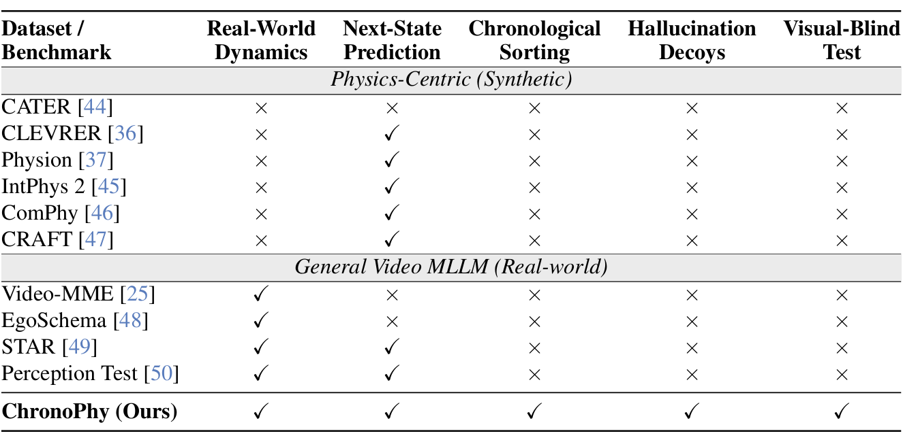
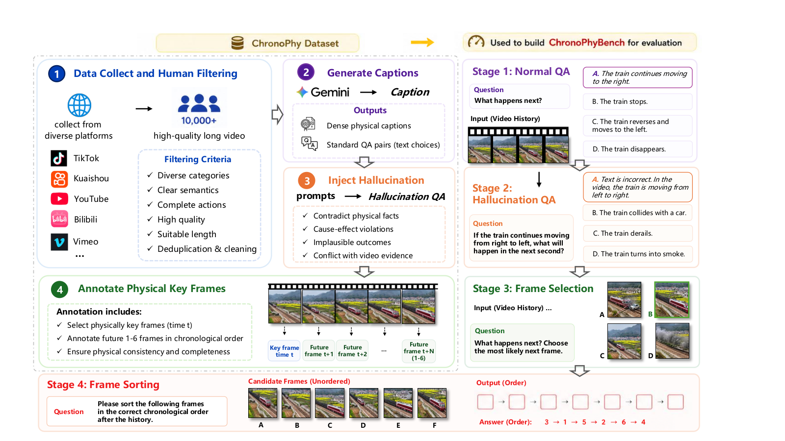

Paper Abstract
Exposing shortcut learning in multimodal LLMs
While multimodal large language models (MLLMs) have demonstrated remarkable performance on video understanding benchmarks, it remains unclear whether they truly grasp the underlying physical dynamics of the world or simply exploit statistical correlations in their training data.
We identify and systematically expose the prevalence of shortcut learning and modality bias in MLLMs, demonstrating how textual priors can induce hallucinations of physical reasoning capabilities. To address this, we introduce ChronoPhyBench, a unified benchmark that employs next-state prediction and chronological sorting to explicitly evaluate cross-modal synthesis and penalize reliance on a single modality.
We release ChronoPhy, a large-scale dataset of over 10,000 annotated videos, providing the community with a rigorous framework for stress-testing multimodal robustness and advancing the development of Physical AI toward genuine Artificial General Intelligence.
Our benchmark targets the models' grasp of fundamental physical laws — gravity, collision, conservation, friction, deformation — and their ability to reason about causal chains in dynamic, real-world scenes.

Benchmark Design
Three tasks targeting cross-modal physical reasoning
ChronoPhyBench evaluates Video-LLMs across three complementary task types, each designed to probe a different aspect of physical understanding. Tasks require synthesis of visual dynamics and physical priors — single-modality shortcuts are explicitly penalized.
Multiple-Choice QA
Watch a video and answer physics questions. Includes both standard QA and hallucination-robust QA variants to test reasoning vs. guessing.
Metric: AccuracyTemporal Frame Selecting
Given a historical video, select the single physically-plausible next frame from multiple semantically similar but physically incorrect candidates.
Metric: AccuracyTemporal Frame Sorting
Given an initial background and shuffled future-state images, rearrange them into the correct temporal and physical order of evolution.
Metric: Exact MatchResources
Open-source and publicly available
The ChronoPhy dataset, evaluation code, and baseline results are fully open-sourced. All materials are available on GitHub and HuggingFace for the research community.